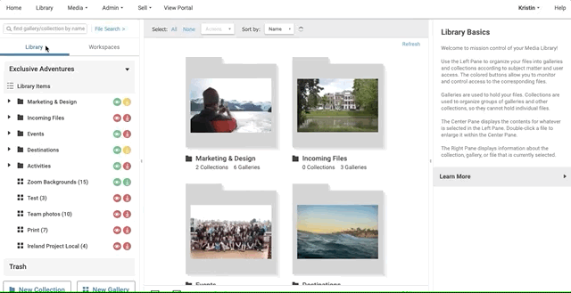

Photoshelter.com: Accessibility & UI Prototyping
Enterprise SaaS Development
Front-end and interface development
Research and Development
The primary goal of the R&D Department at Photoshelter was to explore and prototype features outside the existing production timeline, ensuring our products remained innovative and competitive. Working closely with the Chief Architect, we identified critical areas for improvement and innovation. My role was central in prototyping these new features using technologies including PolymerLit, React.js, and the Javascript implementation of OpenCV.
Key Achievements:
- Workflow Automation Interface:
I prototyped this highly requested feature which accelerated the development of the Smart Galleries feature and laid the groundwork for its implementation. This prototype reduced production time by 30% compared to building the feature in the production environment, as it identified roadblocks to integrating it with the rest of the application. See the documentation for the final feature
- Image Blur Comparison Tool: I built this with the client-side implementation of OpenCV. Although this prototype ultimately did not make it into production, it served as an example of client-side image manipulation tools that do not require backend development time or server-side resources beyond static files.
Production Team Initiatives
In addition to new feature development, another goal was to align our codebase with contemporary Accessibility standards. Most Photoshelter customers are institutional clients (either universities or professional sports teams) and there was a concrete risk of running up against the Americans with Disabilities Act (ADA.)
Key Achievements:
-
Roadmap to achieve Accessibility: An initial code audit surfaced Accessibility violations that could be classified into two main camps: "Low-hanging fruit," such as missing ARIA attributes and labels for forms and buttons, and more involved omissions, such as mouse-only navigation for all menus.
-
Implementing Keyboard Navigation:
 Keyboard Navigation for main menu
Keyboard Navigation for main menu
Before my time at Photoshelter, the mouse was the only way to navigate through the main menu. Using the keyboard to access features within the product is not only necessary for users with low mobility, but it also improves the productivity of abled users who prefer keyboard shortcuts. Implementing keyboard navigation significantly reduced our Accessibility tech debt, moving the company closer to meeting WCAG standards.
Using accessibility tools such as the Deque's axe DevTools Library, we conducted thorough audits of our codebase. These tools helped identify various issues, including non-compliant ARIA roles, missing labels, and problematic focus management.
Adding a layer of keyboard navigation presented unique challenges, primarily due to using the Shadow DOM with Polymer and Web Components. Shadow DOM's encapsulation can obscure elements from standard JavaScript event listeners, making it difficult to ensure consistent focus management and keyboard accessibility. Overcoming this required a detailed understanding of both the accessibility requirements and the internals of the Shadow DOM. The main menu seamlessly goes from mouse to keyboard control
A custom solution was developed to bridge these gaps, allowing keyboard events to propagate correctly and ensuring all interactive elements were accessible via keyboard navigation.
My efforts significantly reduced our accessibility tech debt, ensured compliance with WCAG 2.1 standards, and introduced the development culture to the habit of considering Accessibility before a feature is shipped.